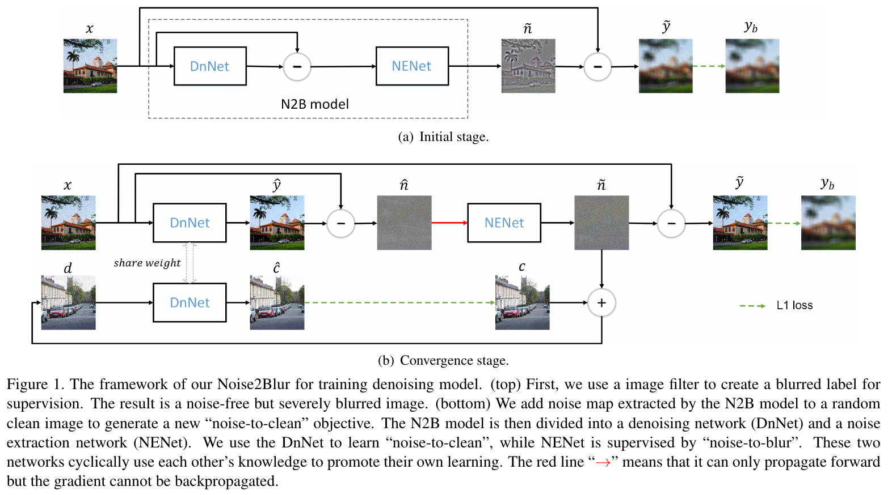
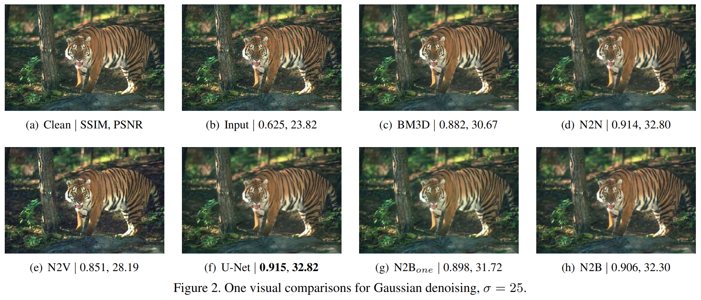
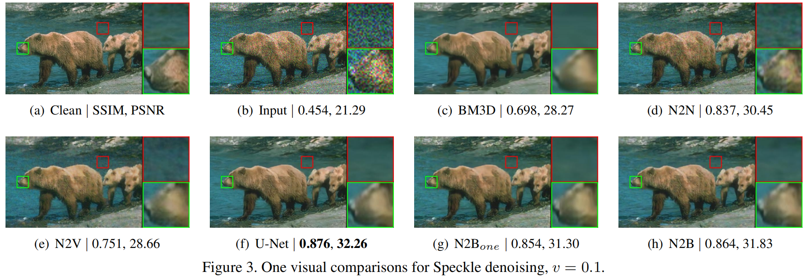
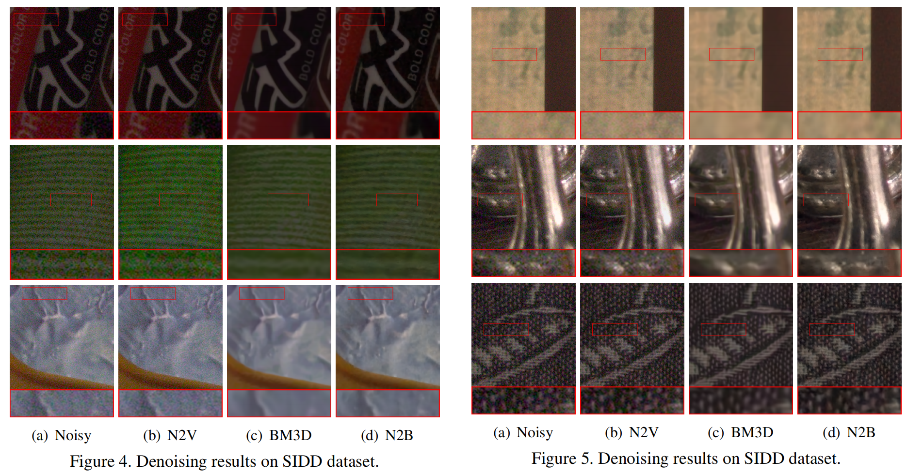
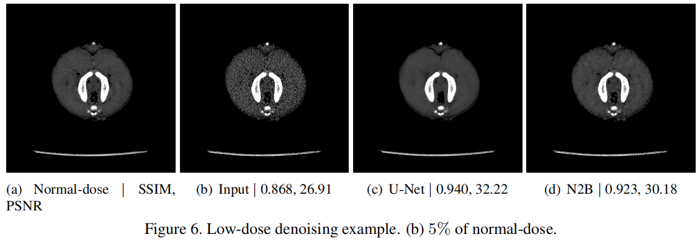

We propose a new framework called Noise2Blur (N2B) for training robust image denoising models without pre-collected paired noisy/clean images. The training of the model requires only some (or even one) noisy images, some random unpaired clean images, and noise-free but blurred labels obtained by predefined filtering of the noisy images. The N2B model consists of two parts: a denoising network and a noise extraction network. First, the noise extraction network learns to output a noise map using the noise information from the denoising network under the guidence of the blurred labels. Then, the noise map is added to a clean image to generate a new “noisy/clean” image pair. Using the new image pair, the denoising network learns to generate clean and high-quality images from noisy observations. These two networks are trained simultaneously and mutually aid each other to learn the mappings of noise to clean/blur. Experiments on several denoising tasks show that the denoising performance of N2B is close to that of other denoising CNNs trained with pre-collected paired data.



SIDD dataset. Smartphone image denoising dataset (SIDD) [1] is another real-world dataset that contains 320 noisy images with a resolution of 4k or 5k for training. We use a median filter with a kernel size of 35 to generate blurred labels. We compare N2B with Noise2Void (N2V) and BM3D. The subjective results on the SIDD validation set are shown in Figures 4 and 5. As can be seen, the denoising results of N2V and BM3D are disappointing, while our N2B shows encouraging denoising performance.

X-RAY computed tomography (CT) has been widely utilized in both clinical and industrial fields. With the popularity of CT, how to reduce the potential radiation risk has become a public concern. One of the most effective ways to reduce radiation dose is to lower the tube current [2]. However, directly lowering the tube current can significantly increase noise levels and artifacts in the low-dose image, which may impede subsequent diagnosis. To address this issue, low-dose CT denoising has been of great research interest in CT imaging. Since paired low-dose and normal-dose CT images are difficult to obtain, the application of traditional fully-supervised methods for low-dose CT denoising is limited. Our N2B does not require pre-collected paired data, so it should be an ideal solution for low-dose CT denoising. We perform experiments on a piglet dataset provided by [2]. This dataset contains 906 normal-dose CT images of a deceased piglet. We divide them into three parts, 400 for the clean set, 400 for the noise set, and the remaining 106 for the test set. Each normal-dose image in the noise set and test set is paired with four low-dose images with a dose level of 5\%, 10\%, 25\% and 50\%, respectively. For N2B training, the blurred labels are generated by a mean filter with a kernel size 17. Subjective results are shown in Figure 6. As can be seen, our N2B can achieve comparable denoising performance with the fully-supervised U-Net. On the other hand, our N2B yields results 0.957/33.90 dB in terms of SSIM/PSNR for test set, close to the U-Net of 0.968/35.17 dB.

Code will available soon.
[1] Abdelhamed, Abdelrahman, Stephen Lin, and Michael S. Brown. "A high-quality denoising dataset for smartphone cameras." Proceedings of the IEEE Conference on Computer Vision and Pattern Recognition. 2018.
[2] Yi, Xin, and Paul Babyn. "Sharpness-aware low-dose CT denoising using conditional generative adversarial network." Journal of digital imaging 31.5 (2018): 655-669.